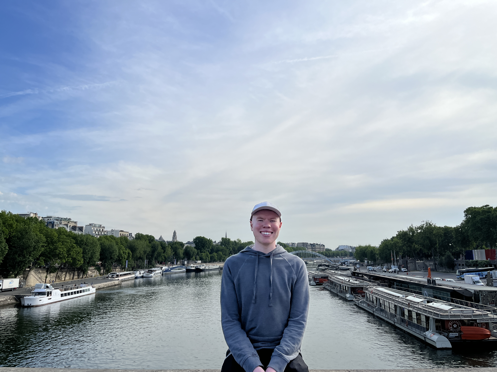

Travel
After studying abroad in the summer of 2022, I caught a serious case of the travel bug. I quickly fell in love with travel in a nontraditional sense. Rather than luxury hotels or polished itineraries, I am drawn to backpacking, staying in hostels, meeting new people, and finding meaningful experiences on a tight budget.
To me, travel is less about destinations and more about connection. It is about shared stories, unexpected friendships, and experiences that challenge my perspective. The imperfect moments often become the most memorable, whether it is navigating unfamiliar places, sharing meals with locals, or learning from people whose lives look very different from my own.
